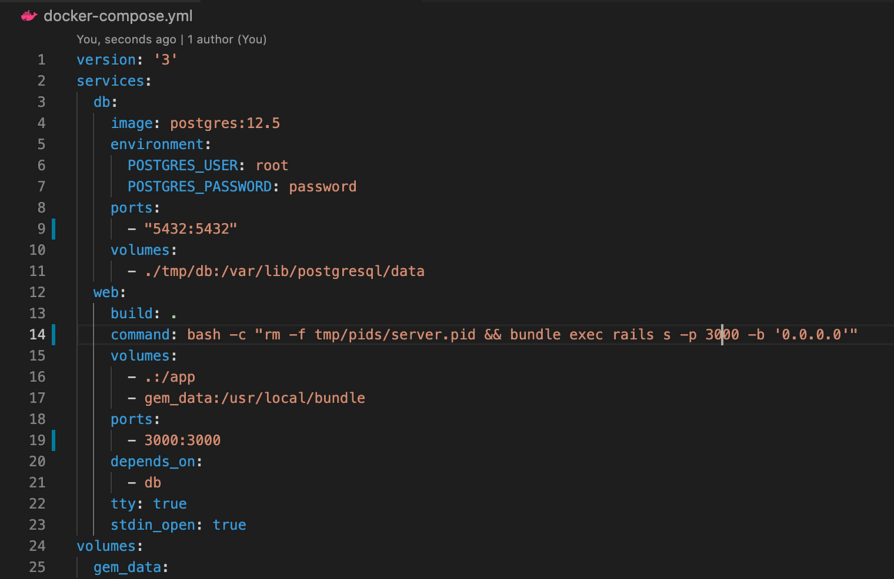

YAML uses indentation to represent data structure. No curly braces, no brackets — just clean, readable data structures powered by spacing. Here’s a breakdown of the core syntax rules and how to write proper YAML files.
This sample demonstrates basic syntax with key-value pairs, lists, and nesting.
key: value
fruits:
- Apple
- Banana
- Cherry
# for comments.true / false (lowercase)YAML is widely used in tools like Docker Compose, GitHub Actions, Kubernetes manifests, and configuration files for many frameworks. Here's an example Docker Compose YAML:
That’s YAML syntax in a nutshell — clean, indented, and super readable. Now you’re ready to write config files, workflows, or structured data without ugly brackets and quotes everywhere. Try building your own YAML file structure next!